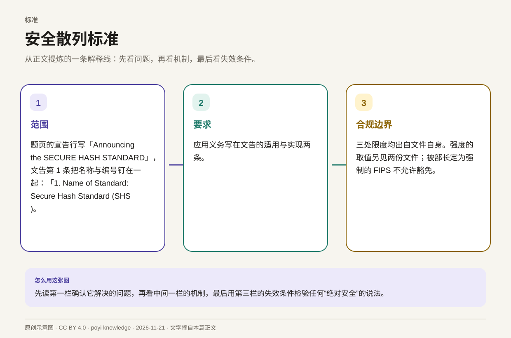
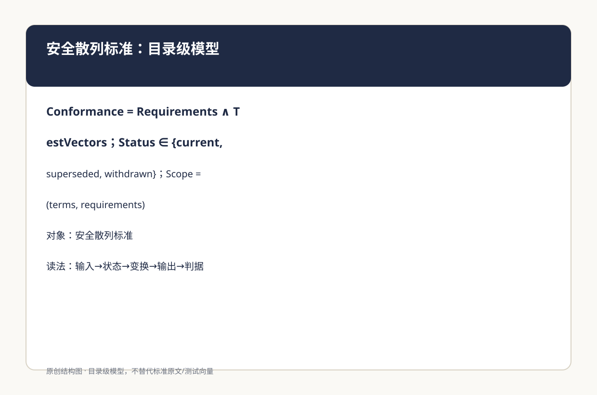

原理与机制
标准：安全散列标准（Secure Hash Standard）。题页的宣告行写「Announcing the SECURE HASH STANDARD」，文告第 1 条把名称与编号钉在一起：「1.Name of Standard: Secure Hash Standard (SHS) (FIPS PUB 180-4).」摘要给出自我定义：「This standard specifies hash algorithms that can be used to generate digests of messages.」下一句交代用途：「The digests are used to detect whether messages have been changed since the digests were generated.」第 3 条逐个点名算法并给出对象：「3.Explanation: This Standard specifies secure hash algorithms - SHA-1, SHA-224, SHA-256, SHA-384, SHA-512, SHA-512/224 and SHA-512/256 - for computing a condensed representation of electronic data (message).」同一节限定输出：「The message digests range in length from 160 to 512 bits, depending on the algorithm.」规定的是七个算法与摘要的计算方式，算法之外的强度判断另有文件。

为什么重要
理由写在第 3 条的第二段，用两条困难性定义 secure：「The hash algorithms specified in this Standard are called secure because, for a given algorithm, it is computationally infeasible 1) to find a message that corresponds to a given message digest, or 2) to find two different messages that produce the same message digest.」后果紧接一句：「This will result in a verification failure when the secure hash algorithm is used with a digital signature algorithm or a keyed-hash message authentication algorithm.」第 1 节给出结构前提：「All of the algorithms are iterative, one-way hash functions that can process a message to produce a condensed representation called a message digest.」三段连读是同一个论证：摘要能充当完整性判据，前提正是求原像与找碰撞都不可行，而这两条困难性就是本文所称 secure 的含义。
应用与实例
应用义务写在文告的适用与实现两条。第 6 条用 must 落到联邦用法：「Either this Standard or Federal Information Processing Standard (FIPS) 202 must be implemented wherever a secure hash algorithm is required for Federal applications, including as a component within other cryptographic algorithms and protocols.」第 8 条先开放实现载体：「8.Implementations: The secure hash algorithms specified herein may be implemented in software, firmware, hardware or any combination thereof.」再给出合规关口：「Only algorithm implementations that are validated by NIST will be considered as complying with this standard.」两句层级不同：前者是联邦应用中 must 级的实现要求，后者把合规认定系于 NIST 验证，算法本身正确并不足以构成符合。

边界与攻击面
三处限度均出自文件自身。第 12 条先否认符合即安全：「While it is the intent of this Standard to specify general security requirements for generating a message digest, conformance to this Standard does not assure that a particular implementation is secure.」并把判断交给使用方：「The responsible authority in each agency or department shall assure that an overall implementation provides an acceptable level of security.」强度问题则明确另交他文：「The algorithms differ most significantly in the security strengths that are provided for the data being hashed.」其下一句给出去处：「The security strengths of these hash functions and the system as a whole when each of them is used with other cryptographic algorithms, such as digital signature algorithms and keyed-hash message authentication codes, can be found in [SP 800-57] and [SP 800-107].」第 13 条又关掉豁免通道：「The Federal Information Security Management Act (FISMA) does not allow for waivers to a FIPS that is made mandatory by the Secretary of Commerce.」三处限制各有层级：符合本标准只担保摘要的产生方式，不担保被部署的实现整体可接受；强度的取值另见两份文件；被部长定为强制的 FIPS 不允许豁免。
历史与背景
题页两行连读为「Federal Information Processing Standards Publication 180-4 August 2015」，即这份副本的日期行是 2015 年 8 月；其下的免费获取行写「This publication is available free of charge from:」，其后是 DOI 10.6028/NIST.FIPS.180-4。前言署名为「Charles H.Romine, Director Information Technology Laboratory」；文告第 4 条把批准权写成「4.Approving Authority: Secretary of Commerce.」取代关系见第 3 条末句：「This Standard supersedes FIPS 180-3 [FIPS 180-3].」本文件没有作者栏，署名是商务部长、NIST 所长（兼标准与技术副部长）与信息技术实验室主任；这份留存文本只给出 2015 年 8 月的日期行与被取代的 180-3，未见 180-4 自身初版日期的记载。
逐步示例与核验
形式模型与复算步骤
[S=\min_i S_i,\quad S_i\in{\text{密钥强度},\text{分组安全},\text{实现安全}}]
安全散列标准的公开参数、密钥/随机数与消息；变量说明：S 为综合安全强度；各分量取最小值，不能只看密钥位数。1.读取标准规定的密钥/分组/模式参数。2.按标准表换算等效强度。3.取最弱分量作为系统强度。边界：公式只覆盖已登记的参数与假设；参数取值、标准版本和实现细节仍以来源为准。
参考出处
- Wikipedia search entry for 安全散列标准. https://zh.wikipedia.org/w/index.php?search=%E5%AE%89%E5%85%A8%E6%95%A3%E5%88%97%E6%A0%87%E5%87%86
- Handbook of Applied Cryptography (Menezes, van Oorschot, Vanstone). https://www.cacr.math.uwaterloo.ca/hac/
- NIST FIPS 180-4: Secure Hash Standard. https://csrc.nist.gov/pubs/fips/180-4/final
- Published standard/RFC for 安全散列标准. https://csrc.nist.gov/pubs/fips/180-4/final